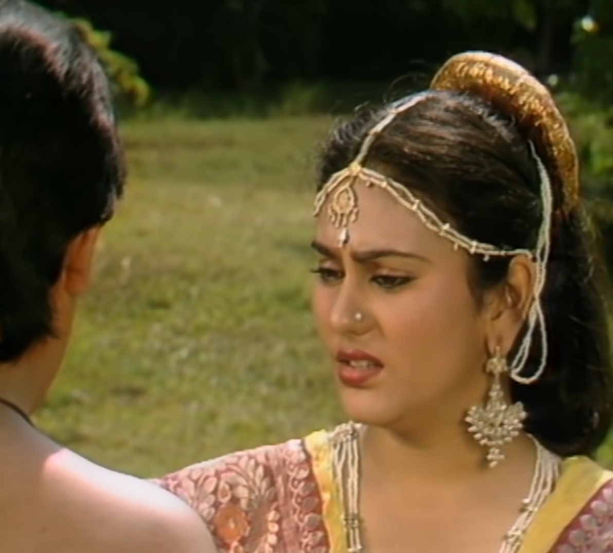
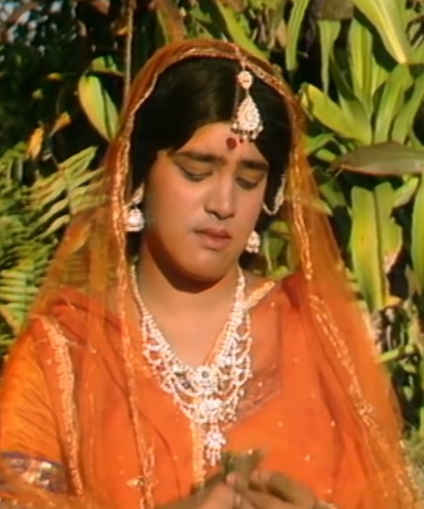
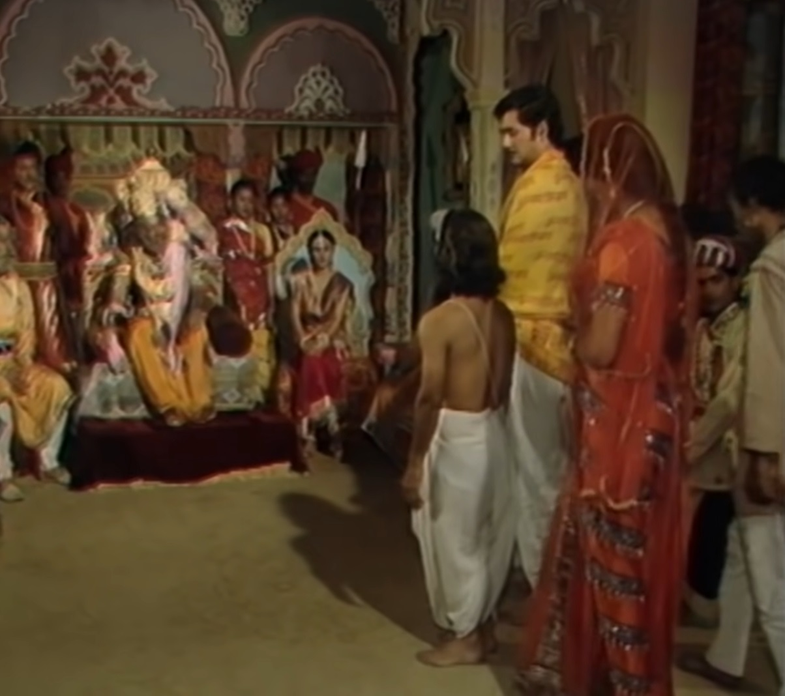

  
Vikram catches Betal again and takes him back to tell him a story. He hears that Princess Chandraprabha of Kusumavati Nagar is in love with a young man. Whose name was Manu Kumar. both wanted to marry each other But this was not possible because Manukumar was not the prince of any state but Was an ordinary man. Chandraprabha tells Manu to give up the idea of marrying her. Give. Because my father can even give you death penalty for this which he can bear She won't be able to do it, so she should leave from here. Manu Kumar Rajkumari's talk He accepts and comes. A magician was coming to Kusumavati Nagar with his son. They are attacked by bandits and Manu Kumar saves both of them from the bandits. The magician can ask Manu Kumar for anything of his wish to save his life. Says. Manu Kumar tells the magician that he is in love with Princess Chandraprabha. and he wants to stay with her forever but no one can recognize her. Please do such a miracle. The magician gives him a ring which Manu puts on his right hand. As soon as it is put on the finger of the left hand, one becomes a girl and the same ring is worn on the finger of the left hand. By putting it in Manu becomes Kumar again, Manu becomes happy. Magician, His son and Manu go to the king in the form of a girl. magician one He disguises himself as a Brahmin and tells the king that his name is Muldev and Shashi tells the name of her son and tells the king about Manu about his son's birth. Bahu tells. When the king asks them the reason for their coming, the magician tells them My son and I are going on a pilgrimage, till then you can take care of Manu Kumari. Keep it in your palace. Princess Chandraprabha to Raja Manu Kumari Makes her a friend and keeps her in the palace itself. Manu, as soon as she got the chance, the princess Tells everything. Many days pass like this, both of them spend time with each other. Start spending. One day the minister's son proposed marriage to Manu Kumari. Gives because he started loving her from the day she arrived. Manu forbade him When she does, he becomes stubborn and gives up food. Minister for his son's Coming to terms with her stubbornness, Raj tells Anki that he wants to marry Manu. If he does not marry her then he will sacrifice his life. king's minister Hearing this, he comes to Manu to fulfill his wish. to Manu's left His finger gets injured due to which he is no longer a boy again. Could have done. The king comes to her and tells her that she will marry the minister's son. Hearing that she will be with him, Manu forbids them from doing so but the king allows him to rule. After taking permission, he marries her with the minister's son. looking for a wedding The magician and his son return and arrange Manu's marriage to the minister's son to the king. starts punishing him with his magic power along with the throne. Blows in. The king asks the magician to marry his daughter. Will do it with the daughter. The magician accepts the king's advice and brings the king down. Takes off. When the minister's son comes and tells Manu about this, Manu gets angry. goes. Manu Kumar removes his ring and forces it on his left hand. Manu puts it in his finger and turns back into a boy. Seeing this, the minister's son Becomes surprised. Manu reached the wedding hall with the sword of the minister's son. He goes and says that Chandraprabha is my wife. Betel after hearing so many stories The king asks Vikram to now tell whose wife Chandraprabha is. the king says It is said that Chandra Prabha is Shashi's wife because her marriage is legal with Shashi. But nothing like this had happened to Manu Kumar. Therefore Shashi and Chandraprabha will get married. As soon as he heard the answer of Betal Raja, he returned to his tree. Goes and hangs himself.